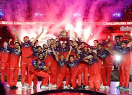
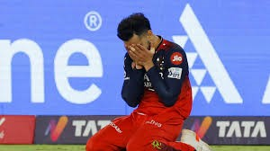
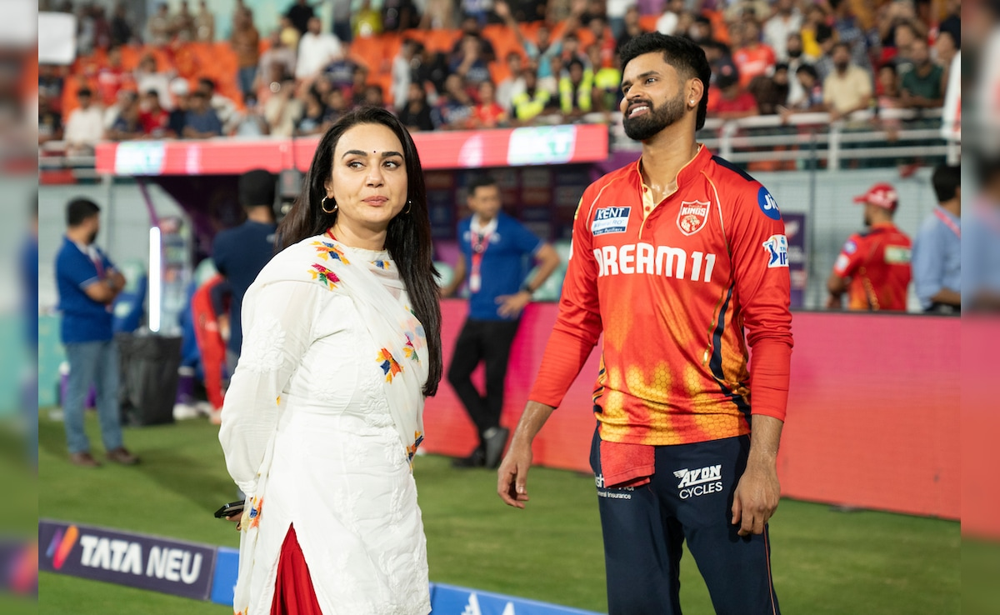
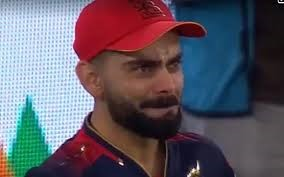
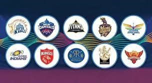
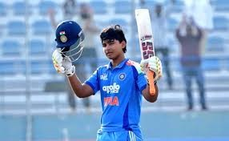

RCB has lift it's first ever IPL trophy, making history! After a long long wait of 18 years!
This season comes to an end folks. Will catch you again in 2026 season, untill then...BYE BYE.
RCB crowned as IPL 2025 champions

For Virat Kohli, IPL 2025 triumph vindicates 18-year-long loyalty to RCB - a team of his 'heart and soul'

"It Didn't End...": Preity Zinta Pours IPL 2025 Final Heartbreak In Emotional Post For PBKS

RCB vs PBKS Highlights, IPL 2025 Final: Virat Kohli in tears as Royal Challengers Bengaluru clinch maiden title

IPL Team Reviews 2026 Strengths, Weaknesses & Betting Insights

Vaibhav Suryavanshi skips CBSE Class 10 board exam!
